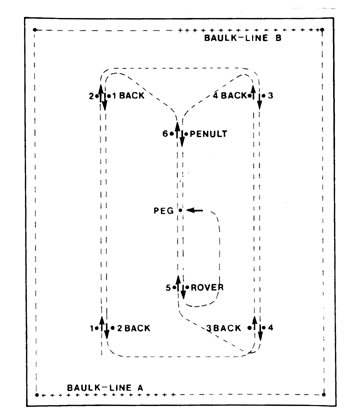

How to Play Croquet
INTRODUCTION
The image of croquet varies between the 19th century garden parties with ladies dressed in crinolines and the game being played by the Queen and Alice in Alice in Wonderland with flamingoes as the mallets and hedgehogs as the balls. Neither of these have to do with the modern game of Association Croquet.
THE GAME ITSELF - THE BASICS
The game is played on a level court about the size of two tennis courts between 2 or 4 (doubles) players. With the aid of different coloured sets of balls two or even three games can be played on a lawn simultaneously.
Each player has two balls. The aim is to make each ball pass through each of the hoops in order and hit the peg in the centre of the court. As the diagram shows, the balls must go through each hoop twice, once in each direction.
In Club and Championship, the hoops are less than 5mm wider than the ball, it is therefore important to have the balls very close to the hoops before you attempt to run the hoop.
Clips which match the colour of the balls are used to indicate the next hoop to be "made" by each ball.
When it is your turn, you may play either of your two balls. If you can make it hit (roquet) any of the other three balls you earn yourself two further shots. For the first of these two extra shots, your ball is picked up and placed against the ball which it hit. It is this two ball (croquet) shot which gives the game its name and makes it unique amongst ball sports.
Each of the three balls can be used only once (to gain extra shots by hitting it) before making a hoop. You also get an extra shot when your ball goes through its correct hoop, and you can then use all the balls again. In this way, experienced players can extend their "break" to over ninety strokes.
NOW SOME MORE DETAILS
The colours of the balls are blue and black versus red and yellow. Secondary balls which allow a separate game to be played on the same court, are green and brown versus pink and white.
Tactics are a very important element in croquet so as ti make it easier for you to make a break but harder for your opponent. It is important therefore that at the end of your turn you leave your balls where your opponent cannot easily use them.
In doubles play, players take one ball each and play as partners.
Because a high level of physical fitness is not required, the game can be played on an even footing by young and old, male and female.
The scoring is based on one point for every time you balls run a hoop or hits the peg in order - 26 in all. Games can either be played until they finish or to a specific time limit eg 2 hours.
A handicap system operates which allows players of different standards to compete on equal terms. The handicap range is from -3 to 24.
UNIQUE FEATURES
The game is unique and contain elements and skills from a number of other sports:
- billiards the skill in making a ball hit another so that they move in different, but specific directions and the ability to extend the player’s time on the court by making "breaks"
- golf accurate single ball strokes are needed as with putting
- bowls an outdoor sport subject to lawn conditions and the weather
- chess much depends on the player’s tactical skills.
LAWS OF THE GAME
The laws of Association Croquet are determined by the national bodies of the four main croquet playing countries - Australia, New Zealand, the USA and the United Kingdom.
There are a number of modified games such as Golf Croquet, Aussie Croquet and short croquet which may be played. Many people who play ‘garden croquet’ use their own informal and simplified rules.
In the USA, some croquet is played using "American" rules which differ in a number of respects from Association Croquet although the equipment and court layout remains the same.
DIAGRAM OF THE COURT
Below is a diagram of the court which shows the way the balls are required to travel through the hoops.
